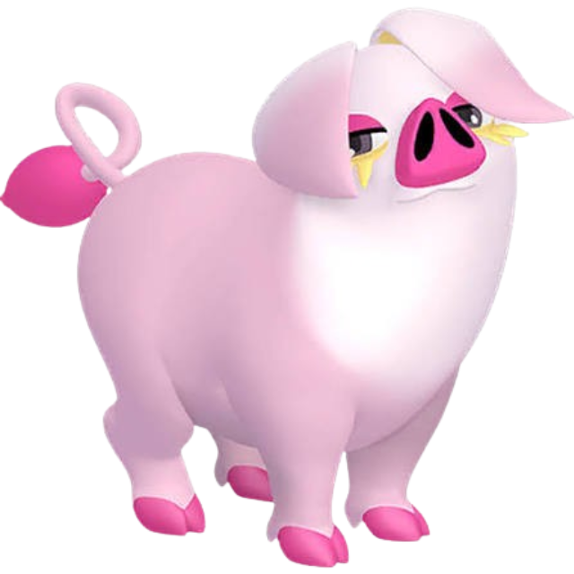
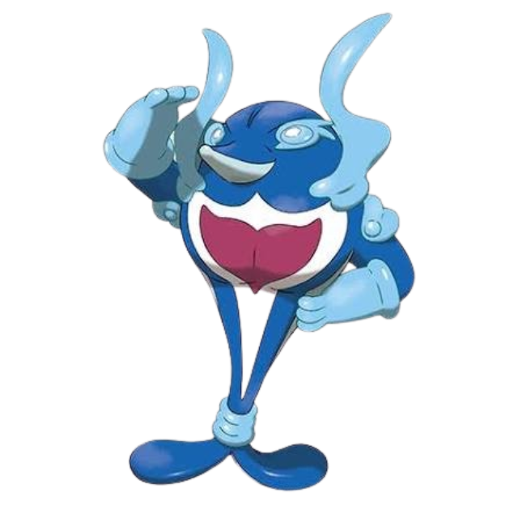
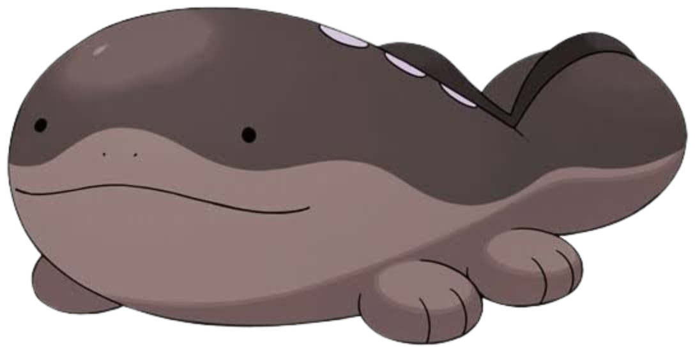
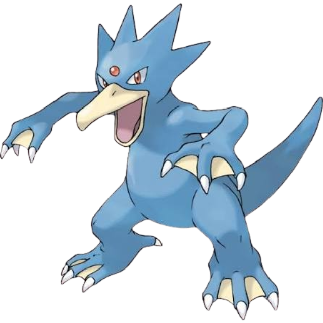
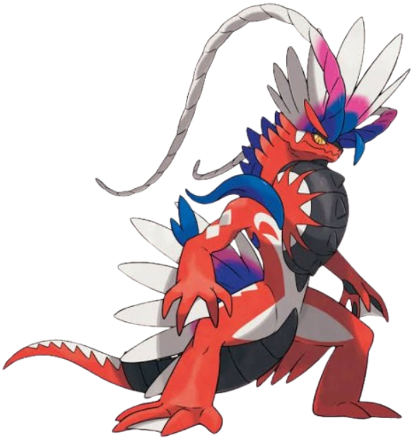
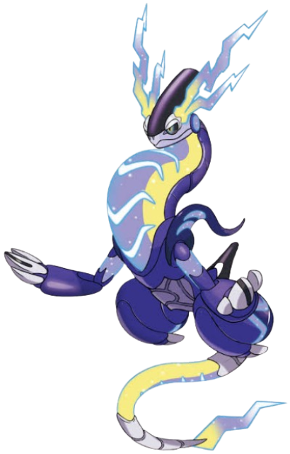

Oinkologne
Moves: [Yawn], [Disarming Coice], [Dig], [Headbutt] Highlights: I began my 2nd playthrough and white just walking around I found a shiny Oinkologne and I didn’t plan on using one but it was a good temporary team member

Palafin
Moves: [Jet Punch], [Flip Turn], [Acrobatics], [Aqua Tail] Highlights: I caught Palafin early as a Finizen at level 18 as I wanted to use Hero form Palafin however I found out that Finizen could only evolve if I leveled him up with a friend linked up with me and I didn’t have any easy or quick ways to do that so I unfortunately had to drop him however while Finizen was part of my team he was quite helpful with the Fire team star raid.


Clodsire
Moves: [Toxic Spikes], [Yawn], [Mud Shot], [Sludge wave] Highlights: Clodsire was caught very early as a Wooper and I used him for a while before getting a Gible. I used him to set up Toxic spikes at the start of a lot of fights. I also used Yawn to stall mid game tera raids.


Golduck
Moves: [Aqua Jet], [Water Pulse], [Confusion], [Fury Swipes] Highlights: Golduck was caught early on as a Psyduck in my 3rd playthrough and used as a temporary water type before I could get gastrodon.

Wo Chien
Moves: [Giga Drain], [Leaf Storm], [Dark Pulse], [Ingrain] Highlights: I received a Shiny Wo-Chien from an in game event at the time. I didnt want to use it as a legendary at level 70 for a playthrough team so I exclusively used them for harder Tera raids. Wo Chien was able to last through a lot of tera raids with Giga Drain to heal constantly while also dealing damage.


Ting Lu
Moves: [Earth Quake], [Stone Edge], [Snarl], [Heavy Slam] Highlights: I received a Shiny Ting-Lu from an in game event at the time. I didnt want to use it as a legendary at level 70 for a playthrough team so I exclusively used them for harder Tera raids. Ting Lu’s bulk was able to tank attacks and hit back with heavy slam to crush raids.

Chien Pao
Moves: [Icicle Crash], [Crunch], [Sacred Sword], [Swords dance] Highlights: I received a Shiny Chien-Pao from an in game event at the time. I didnt want to use it as a legendary at level 70 for a playthrough team so I exclusively used them for harder Tera raids. Chien pao provided me with fighting type coverage that I just didn’t have if charizard was weak to a pokemon.


Chi Yu
Moves: [Heat Wave], [Flame Thrower], [Dark Pulse], [Nasty Plot] Highlights: I received a Shiny Chi-Yu from an in game event at the time. I didnt want to use it as a legendary at level 70 for a playthrough team so I exclusively used them for harder Tera raids. Chi Yu’s high special attack was able to decimate many raids.


Koraidon
Moves: [Dragon Claw], [Bulk up], [Collision Course], [Flamethrower] Highlights: I traded my friends for a Koraidon and I gave them one of my Miraidon. Koraidon like Miraidon briefly helps in difficult tera raids where it has a good matchup.



Miraidon
Moves: [Electro Drift], [Volt Switch], [Draco Meteor], [Parabolic Charge] Highlights: Since I have Pokemon Violet Miraidon was my bike for all my games but since I couldn’t catch one until after the main story finishes I didn’t ever use one on a playthrough team. However it is helpful for Tera raids where it has a good matchup.